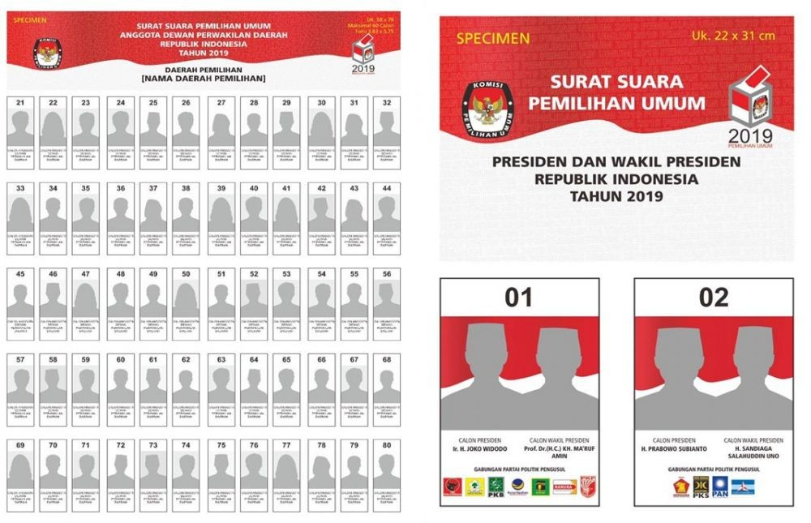
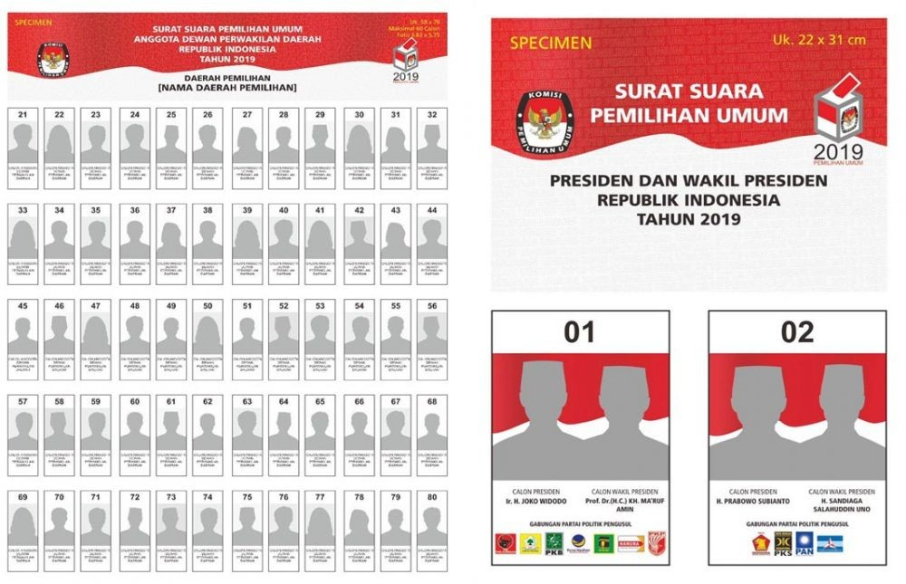

Where we can see the sample of ballot paper?
Below are two speciments of ballot paper use for legislative and presidential election.
In this page you will find some common questions regarding Pemilu 2019. All the questions and answer are aggregated based on the most frequently ask questions during the socialization period since 2018. These questions are most likely to be answered by refering to the official rule or the updated rule from KPU website.
All questions and answers published here are curated and aggregated from various online and offline documentations.
Below are two speciments of ballot paper use for legislative and presidential election.
Below is the official video recommendation from KPU for legislative and presidential election.
In Indonesia Election will be held on 17 April 2019, while overseas will be held earlier from 12 April 2019, 13 April 2019 to 16 April 2019. The counting will be held on 17 April 2019 the same day with Indonesia election schedule.
Unfortunately the registration period of eligible voters already closed in 2018. If you already registered in Indonesia and or moving from other voting location to other overseas voting location, you can still vote by bring A5 form from your previous location and send it to the local voting commitee on the election day. You can vote during the last one hour before closing of the election time, as long as the voting ballot still available.